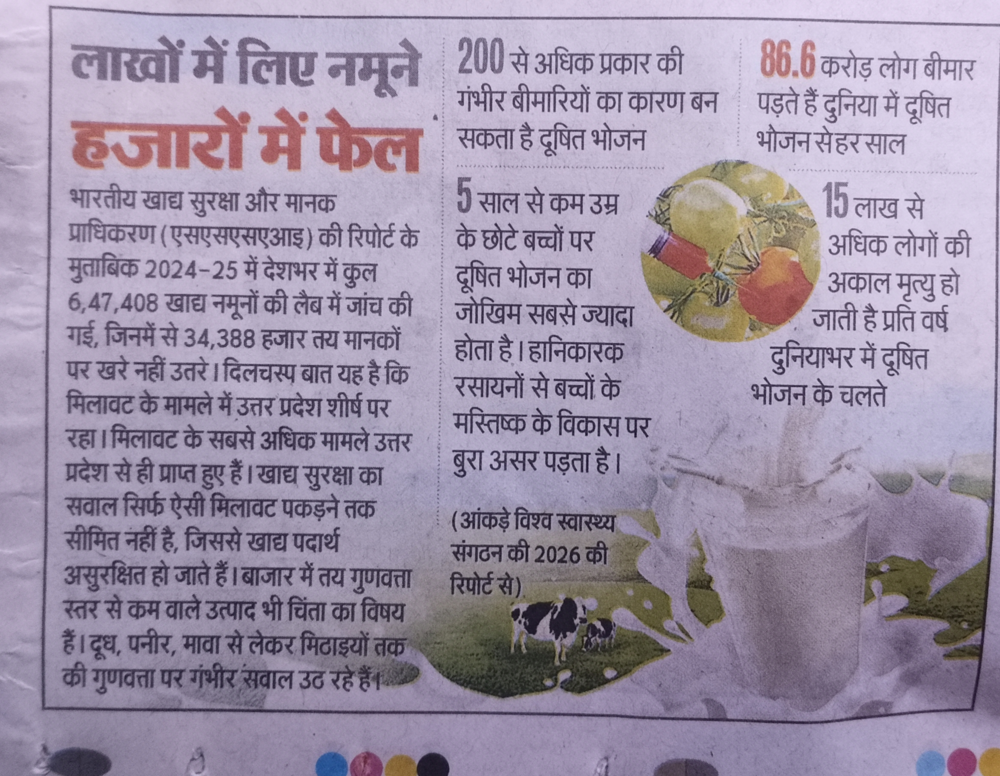

HARSHA DAIRY
Pure Milk, Pure Trust
Pure Milk, Pure Trust
अखबार की रिपोर्ट्स के मुताबिक खाद्य पदार्थों में मिलावट से हमारे स्वास्थ्य पर बहुत बुरा असर पड़ रहा है। हर्षा डेयरी का मुख्य उद्देश्य इसी जहरीली मिलावट को जड़ से समाप्त करना है।
